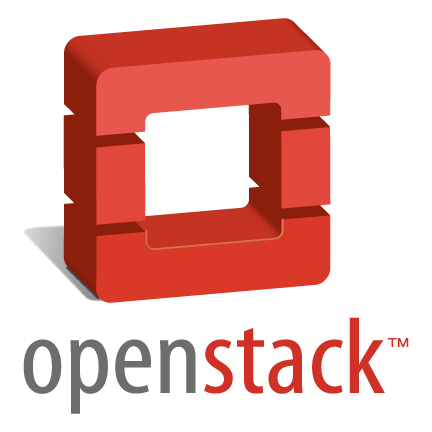

Your browser doesn't support the features required by impress.js, so you are presented with a simplified version of this presentation.
For the best experience please use the latest Chrome, Safari or Firefox browser.
Julien Brun
Maxime Mouchet
Cloud Privé
avec
OpenStack
Tuteur : Frédéric Pourraz


Présentation du projet
OpenStack vu de l'intérieur
Conlusion, et perspectives
Notre projet
But : mettre en place un Cloud Privé à l'IUT
Le Cloud Computing et la virtualisation
=> Dématérialisation et décentralisation.
Intérêts
- Mise en production et dimensionnement facilité
- Réduction des côuts
Modèles
Cloud public vs. Cloud privé
Cloud public
- Géré par une entreprise tierce
- Situé à l'extérieur de l'entreprise
- Ressources partagés entre les clients
- Paiement à l'utilisation (par heures)
Cloud privé
- A l'usage exclusif d'une entreprise
- Achat du matériel
- Mise en place et administration
=> Principalement une problématique de sécurité.

Qu'est ce que c'est ?
OpenStack, c'est :
- Un ensemble de logiciels permettant de construire des infrastructures en tant que service.
- Une architecture modulaire facilitant le déploiement et la mise à l'échelle.
- Gratuit et Open Source.
- Soutenu par des grandes entreprises tels que HP, Cisco, IBM, Intel, ...
- Une communauté active sur Internet (mailing-lists, wikis, blogs).
Juju
Comment ça marche ?
Keystone, Nova, Cinder, Glance, Swift, ...
=> middlewares WSGI
WSGI : Web Server Gateway Interface
middleware : Application WSGI à la fois cliente et serveur
Deux moyens de communication
Depuis l'extérieur, une API REST
API : Application Programming Interface
REST : REpresentational State Transfer
API REST
Avantages
- Haut niveau, compréhensible
- Utilisable dans ~ tout les languages de programmation
Inconvénient
- Lourd, overhead important (protocole HTTP, mode texte)
=> Pas optimisé pour la communication inter-services
Entre les services, AMQP
 AMQP : Advanced Message Queuing Protocol
AMQP : Advanced Message Queuing Protocol
AMQP
Avantages
- Rapide, faible overhead
- Fiable
Inconvénients
- Plus compliqué à implémenter
- Pas utilisable directement (ex. en ligne de commande)
=> Idéal pour la communication inter-services
Le scheduling
Comment répartir les instances virtuelles et le stockage ?

Exemples
Filters
- RamFilter
- CoreFilter
- SameHostFilter
- SimpleCIDRAffinityFilter
Costs and Weights
- fill_first_cost_fn
- retry_host_cost_fn
BladeCenter

- Fiabilité
- Scalabilité
- Haute densité
- Stockage indépendant
Le BladeCenter R&T
Caractéristiques
- Serveurs blade HP de 2007
- Bi-processeurs 64 bits
- 4 ou 8 Go de RAM
- Stockage SAN HP StorageWorks
Mais... pas adapté à la virtualisation
- Processeurs anciens qui ne supportent pas les extensions VT
- Chipsets incompatibles avec les systèmes récents
- Manque de RAM
Conclusion suite
Use a spacebar or arrow keys to navigate